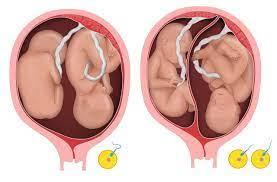
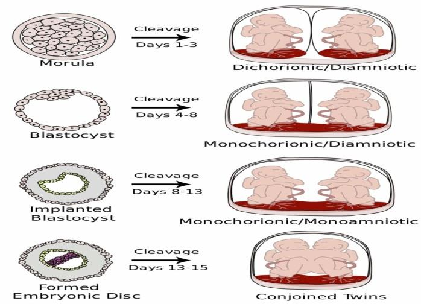
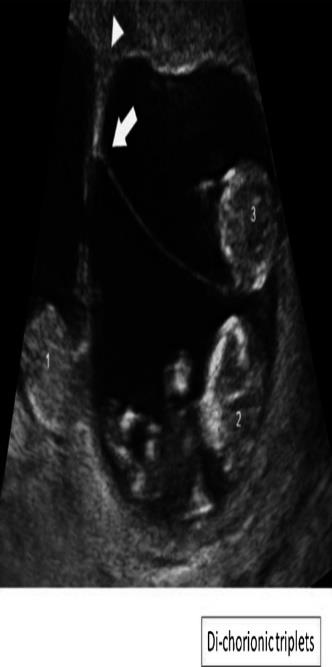
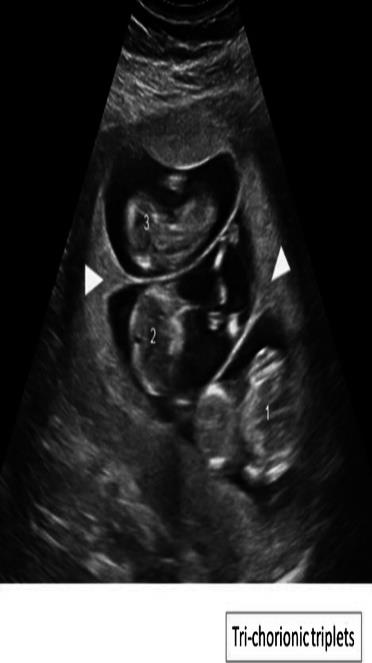
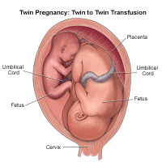

A high-risk pregnancy with more than one fetus inside the uterus. This chapter covers the definition and key terminology (zygosity, chorionicity, amnionicity), the two embryological origins (monozygotic vs dizygotic), the timing-based classification of monozygotic cleavage (4 stages from days 1-3 to >12 days), clinical and sonographic diagnosis, ultrasound chorionicity markers (lambda sign, T sign), antenatal + obstetric management (route of delivery by presentation, timing of delivery by chorionicity, third-stage precautions), and the full spectrum of maternal + fetal complications including twin-to-twin transfusion syndrome (TTTS).
To understand the definition and variable developmental forms of multiple pregnancy.
To be able to describe the clinical picture, and obstetric management of multiple pregnancy.
To be able to outline the possible maternal and fetal complications of multiple pregnancy.
2Definition & key terminology
📋 Definition
A pregnancy with more than 1 fetus inside the uterus.
The chapter then defines the 5 most important terms used in multiple pregnancy — these are the vocabulary that the rest of the chapter builds on, so they must be memorized first.
Term
Definition (verbatim from source)
Zygosity
The genetic make up of a twin pregnancy
Monozygotic twins
Result from division of a single zygote Share the same genetic material Identical twins
Dizygotic twins
Result from 2 separate eggs fertilized by 2 separate sperm Share approximately 50% of the genetic material Fraternal twins
Chorionicity
The number of chorions (equal to the number of placentas)
Amnionicity
The number of amnions surrounding the fetuses
💡 CLINICAL PEARL — "Zygote" vs "Chorion" vs "Amnion"
These three words refer to three different layers of biology and three different diagnostic questions:
Zygote = the fertilized egg before it divides. Zygosity asks: "Did the twins come from one zygote or two?" → monozygotic (= one zygote → identical) vs dizygotic (= two zygotes → fraternal).
Chorion = the outer fetal membrane that becomes the placenta. Chorionicity asks: "How many placentas do the twins share?" → dichorionic (= 2 placentas) vs monochorionic (= 1 shared placenta).
Amnion = the inner fetal membrane that holds the amniotic fluid. Amnionicity asks: "How many amniotic sacs do the twins have?" → diamniotic (= 2 sacs) vs monoamniotic (= 1 shared sac).
The timing of the monozygotic embryo's cleavage (see §5 + Figure 2) determines the chorionicity and amnionicity — the later the cleavage, the more structures the twins share. The clinical importance of chorionicity is that monochorionic twins share a placenta and can therefore develop twin-to-twin transfusion syndrome (TTTS) — see §12.
📝 Question 1 of 5
A multiple pregnancy is defined as:
Multiple pregnancy is simply defined as a pregnancy with more than 1 fetus in the uterus. This includes twins (most common), triplets, and higher-order multiples. The management complexity and risks increase with each additional fetus.
📝 Question 2 of 5
Monozygotic twins result from:
Monozygotic (identical) twins arise from the division of a single zygote and share the same genetic material. Their chorionicity and amnionicity depend on the timing of cleavage after fertilization. Monozygotic twins may be DCDA, MCDA, MCMA, or conjoined depending on cleavage timing.
📝 Question 3 of 5
Chorionicity refers to:
Chorionicity is the number of chorions, which equals the number of placentas. Dichorionic twins have two separate placentas; monochorionic twins share one placenta. This distinction is critical because monochorionic twins are at risk for TTTS.
📝 Question 4 of 5
Dizygotic twins share approximately what percentage of their genetic material?
Dizygotic (fraternal) twins result from two separate eggs fertilized by two separate sperm. Like any siblings, they share approximately 50% of their genetic material. They are never genetically identical, unlike monozygotic twins.
📝 Question 5 of 5
The clinical significance of this section is:
Understanding these concepts directly informs clinical management.
3Figure 1 · Singleton vs Twin comparison
The opening visual of the chapter — a side-by-side comparison of a singleton pregnancy (one fetus) and a twin pregnancy (two fetuses). The same pink/peach cross-sectional illustration style is used for both, with the number of yellow smiley-face icons below each panel reinforcing the count.
Source Image · img-000

Figure 1 — Singleton vs Twin pregnancy: visual comparison of one fetus versus two fetuses inside the uterus. A pair of pink/peach cross-sectional diagrams of pregnant uteruses, presented side-by-side. The left panel contains a single fetus in cephalic presentation with its umbilical cord, accompanied by one yellow smiley face below the panel. The right panel contains two fetuses in the same uterus, each with its own umbilical cord, accompanied by two yellow smiley faces below the panel. This figure visually anchors the chapter's core concept — a multiple pregnancy is simply a pregnancy with more than one fetus — and it is the only figure in the chapter that uses smiley-face icons as a counting aid.
🧠 MEMORY ANCHOR — Why start with this comparison?
The chapter opens with this comparison because the entire downstream management is driven by one question: how many fetuses? Antenatal care frequency, ultrasound schedule, delivery route, delivery timing, third-stage precautions, and complication surveillance all change when the answer is 2 (or 3+) instead of 1. The smiley-face icons below each panel are the simplest possible "count" — and they remind the clinician that everything that follows in the chapter is a consequence of that count being greater than 1.
📝 Question 1 of 5
When assessing this aspect, the most important factor is:
Assessment requires integration of clinical, laboratory, and imaging findings.
📝 Question 2 of 5
In obstetric practice, this knowledge helps:
Comprehensive knowledge enables prevention, early diagnosis, and optimal management.
📝 Question 3 of 5
Which of the following is a key concept?
Understanding key concepts is fundamental to clinical management.
📝 Question 4 of 5
The clinical significance of this section is:
Understanding these concepts directly informs clinical management.
📝 Question 5 of 5
Which of the following is a key concept?
Understanding key concepts is fundamental to clinical management.
4Monozygotic vs Dizygotic twins
Twins are classified by zygosity (genetic origin) into two main groups — monozygotic ("identical", from 1 zygote) and dizygotic ("fraternal", from 2 zygotes). The chapter gives the incidence, 6 risk factors (one applies only to dizygotic), and the classification by chorionicity + amnionicity.
📊 Incidence
Twins
1 in 80 pregnancies.
Triplets
1 in 80² = 1 in 6,400 pregnancies.
📋 Risk factors (6 — one applies only to dizygotic)
1. Prior history of multiple pregnancies
Recurrence risk in subsequent pregnancies.
2. History of twins in the maternal family
Hereditary predisposition, particularly for dizygotic twinning.
3. Maternal weight and height
Women with a BMI ≥ 30 kg/m² and ≥ 165 cm are at ↑ risk for dizygotic twin births (the only risk factor the source flags as specific to dizygotic).
4. ↑ Maternal age
Older mothers have higher FSH levels, increasing the chance of multiple ovulation.
5. ↑ Parity
Multiparous women have higher rates of multiple pregnancy.
6. Racial and ethnic variation
Certain ethnic groups have higher baseline dizygotic twinning rates (e.g., West African populations have the highest rates worldwide; East Asian populations have among the lowest).
📋 Classification
Dizygotic twins
Always dichorionic-diamniotic.
Two separate eggs + two separate sperm → two separate zygotes → each develops its own placenta and amniotic sac. There is no monochorionic form of dizygotic twinning.
Monozygotic twins
Classified based on the timing of cleavage after fertilization.
The timing of cleavage determines chorionicity and amnionicity — the 4 stages are in §5 + Figure 2.
🚨 DANGER — BMI ≥ 30 AND height ≥ 165 cm is a SINGLE risk factor (not two)
The source lists "Maternal weight and height" as a single risk factor, with the specific quantitative criterion BMI ≥ 30 kg/m² AND ≥ 165 cm applying to dizygotic twin births only. It is easy to misread this as two separate risk factors (one for weight, one for height), but the source treats it as a single combined criterion — both the BMI threshold and the height threshold must be met for the increased dizygotic risk to apply.
📝 Question 1 of 5
Which of the following is a key concept?
Understanding key concepts is fundamental to clinical management.
📝 Question 2 of 5
In obstetric practice, this knowledge helps:
Comprehensive knowledge enables prevention, early diagnosis, and optimal management.
📝 Question 3 of 5
When assessing this aspect, the most important factor is:
Assessment requires integration of clinical, laboratory, and imaging findings.
📝 Question 4 of 5
The clinical significance of this section is:
Understanding these concepts directly informs clinical management.
📝 Question 5 of 5
Which of the following is a key concept?
Understanding key concepts is fundamental to clinical management.
For monozygotic twins, the chapter's central embryological rule: the timing of cleavage after fertilization determines the chorionicity and amnionicity. The source lists 4 stages, ranging from days 1-3 (earliest cleavage = most separate membranes) to after 12 days (latest cleavage = least separate = conjoined twins).
Source Image · img-001

Figure 2 — Monozygotic cleavage timing: 4 stages from morula to embryonic disc, with the resulting chorionicity/amnionicity. A 4-row embryology diagram. Each row has three panels: the left shows the embryo at that developmental stage, the middle indicates the cleavage (splitting) event, and the right shows the resulting twin configuration. Row 1 (Morula, days 1-3): solid mulberry-like cell cluster → splits → Dichorionic-Diamniotic twins (2 separate placentas, 2 separate sacs). Row 2 (Blastocyst, days 4-8): hollow ring of trophoblast with inner cell mass → splits → Monochorionic-Diamniotic twins (1 shared placenta, 2 separate sacs). Row 3 (Implanted blastocyst, days 8-13): blastocyst embedded in uterine wall → splits → Monochorionic-Monoamniotic twins (1 shared placenta, 1 shared sac, no intertwin membrane). Row 4 (Formed embryonic disc, days 13-15): bilaminar disc with primitive streak → incomplete splits → Conjoined twins (fused at varying body sites). The unifying principle: the later the cleavage, the more structures the twins must share.
📋 The 4 stages of monozygotic cleavage (verbatim from source)
Stage 1 · In 1st 3 days
→ Dichorionic Diamniotic.
Earliest cleavage. The morula splits before the chorion forms → each twin gets its own chorion and amnion, and its own placenta. The most separate form of identical twinning.
Stage 2 · 4-8 days
→ Monochorionic Diamniotic.
The blastocyst splits after the chorion has formed but before the amnion forms → twins share one chorion (one placenta) but each has its own amnion. The most common form of identical twinning. Risk of TTTS (see §12).
Stage 3 · 8-12 days
→ Monochorionic Monoamniotic.
The implanted blastocyst splits after the amnion has formed → twins share one chorion and one amnion (no intertwin membrane). Rare, and high-risk because of cord entanglement.
Stage 4 · After 12 days
→ Conjoined twins.
The embryonic disc splits only partially after it has formed → the twins are physically fused at varying body sites. The rarest and most severe form of monozygotic twinning.
💡 CLINICAL PEARL — "The later, the more shared" — the unifying rule
Notice the pattern in the 4 stages: as the cleavage day number goes up (1-3 → 4-8 → 8-12 → >12), the number of shared structures goes up (dichorionic-diamniotic → monochorionic-diamniotic → monochorionic-monoamniotic → conjoined). The biological reason is intuitive: the earlier the split, the more time each half-embryo has to develop its own membranes before the next membrane forms around it. Clinically, the more structures the twins share, the higher the risk of complications — so monochorionic-monoamniotic twins are higher-risk than monochorionic-diamniotic twins, which in turn are higher-risk than dichorionic-diamniotic twins.
📝 Question 1 of 5
Which of the following is a key concept?
Understanding key concepts is fundamental to clinical management.
📝 Question 2 of 5
In obstetric practice, this knowledge helps:
Comprehensive knowledge enables prevention, early diagnosis, and optimal management.
📝 Question 3 of 5
When assessing this aspect, the most important factor is:
Assessment requires integration of clinical, laboratory, and imaging findings.
📝 Question 4 of 5
The clinical significance of this section is:
Understanding these concepts directly informs clinical management.
📝 Question 5 of 5
Which of the following is a key concept?
Understanding key concepts is fundamental to clinical management.
6Diagnosis (signs, abdominal exam, ultrasound)
The chapter divides the diagnosis of multiple pregnancy into three streams: signs and symptoms (subjective/observed), abdominal examination (clinical bedside — inspection, palpation, auscultation), and ultrasound findings (definitive imaging). Ultrasound is the gold standard.
📋 Signs and symptoms
Exaggerated early pregnancy symptoms (e.g. hyperemesis gravidarum). The higher β-hCG of a multiple pregnancy worsens nausea and vomiting in the first trimester.
Symphyseal-fundal height is greater than expected for gestational age. Two fetuses fill the uterus faster than one, so the fundal height is disproportionately large.
Abdominal overdistension. Visible abdominal distension beyond what is expected for dates.
📋 Abdominal examination
I. Inspection
Oversized uterus. The abdomen is visibly larger than expected for gestational age.
II. Palpation
Fundal level: higher than the period of amenorrhea (i.e. the fundus sits higher than the date would suggest).
Fundal, umbilical and first pelvic grips: can detect multiple fetal poles (at least 3 poles should be palpated). Fetal limbs are felt as multiple knobs.
III. Auscultation
Fetal heart sounds are heard simultaneously by 2 observers with a minimum difference of 10 beats/minute. Two observers, two stethoscopes, two fetuses — the two heart rates differ by ≥ 10 bpm, confirming two distinct fetuses.
Arnaux sign: The superimposition of 2 fetal heart sounds produce a gallop sound. (A "gallop" sound is a triphasic rhythm that emerges when two distinct but overlapping heart sounds fuse into one another at certain positions on the abdomen.)
📋 Ultrasound findings
Sonographic diagnosis (gold standard)
≥ 2 fetuses and ≥ 2 heart activities. Direct visualization of two or more fetuses, each with its own cardiac activity.
Diagnosis of congenital anomalies and placenta previa. Ultrasound also allows early detection of structural anomalies and abnormal placental position.
🧠 MEMORY ANCHOR — "3 poles, 2 rates, 1 gallop"
A simple way to remember the three bedside findings that distinguish a twin from a singleton pregnancy:
3 poles on palpation (instead of the usual 2 poles — head + breech) — at least 3 fetal poles must be palpable.
2 rates on auscultation — two observers hearing two distinct heart rates that differ by ≥ 10 bpm.
1 gallop on auscultation — Arnaux sign, the superimposition of two heart sounds producing a triphasic gallop rhythm.
When all three findings are present, multiple pregnancy is highly likely at the bedside — and ultrasound is the next step to confirm and to determine chorionicity (see §7).
📝 Question 1 of 5
The gold standard diagnostic test is:
The best diagnostic method varies by condition — some rely on imaging, others on lab tests or clinical findings.
📝 Question 2 of 5
When assessing this aspect, the most important factor is:
Assessment requires integration of clinical, laboratory, and imaging findings.
📝 Question 3 of 5
Which clinical finding is most suggestive of this diagnosis?
Clinical presentation differs by condition and guides diagnostic testing.
📝 Question 4 of 5
The clinical significance of this section is:
Understanding these concepts directly informs clinical management.
📝 Question 5 of 5
Which of the following is a key concept?
Understanding key concepts is fundamental to clinical management.
7Figures 3&4 · Chorionicity ultrasound markers (Lambda & T signs)
Once ultrasound has confirmed ≥ 2 fetuses, the next critical question is chorionicity — because the chorionicity determines the entire downstream management plan (frequency of ultrasounds, timing of delivery, risk of TTTS). The source describes the 3 chorionicity patterns and their distinct ultrasound signatures.
Source Image · img-002 · Dichorionic Triplets

Figure 3 — Di-chorionic triplets: ultrasound showing one monochorionic-diamniotic twin pair + one singleton with its own chorion. A grayscale obstetric ultrasound image with three numbered fetuses (1, 2, 3). Fetus 1 is in the lower left, Fetus 2 is in the lower right, and Fetus 3 is in the upper right. An arrowhead (triangle) at the top of the image points to a thin intertwin membrane — the signature of a monochorionic-diamniotic (MCDA) twin pair (Fetuses 2 and 3 share one chorion, with a thin T-sign membrane between them). An arrow on the left points to a thick intertwin membrane with the lambda (twin peak) sign — the signature of a dichorionic-diamniotic (DCDA) separation (Fetus 1 has its own complete chorion). The image illustrates the most common form of "dichorionic" triplet pregnancy: one MCDA pair + one singleton sharing no chorion with either.
Source Image · img-003 · Trichorionic Triplets

Figure 4 — Tri-chorionic triplets: ultrasound showing three separate chorions, each with its own fetus and amniotic sac. A grayscale obstetric ultrasound image in the classic sector/fan-shaped format, with three labeled fetuses (1, 2, 3) in separate gestational sacs. Fetus 3 is in the upper portion, Fetus 2 in the center-left, and Fetus 1 in the lower right. Two white arrowheads (left and right) point to the thin intertwin membranes between the three chorionic sacs. The label box in the bottom right corner explicitly states "Tri-chorionic triplets". This is the most favorable triplet configuration in terms of complications — there is no risk of TTTS because no two fetuses share a placenta.
📋 The 3 chorionicity patterns on ultrasound
🟢 Dichorionic-Diamniotic (DCDA)
Lambda sign: a thick, triangular protrusion of tissue leading up to the intertwin membrane. (The "lambda" of the Greek letter λ — the wedge of chorionic tissue between the two amniotic sacs.)
Thick intertwin membrane.
2 separate placentae.
🔵 Monochorionic-Diamniotic (MCDA)
T sign: the interface between 2 amniotic membranes. (The "T" of the letter T — two thin amniotic membranes meeting the placenta at a right angle, with no wedge of chorion between them.)
Thin intertwin membrane.
Single placenta.
🟠 Monochorionic-Monoamniotic (MCMA)
No intertwin membrane. (Because both fetuses share the same amniotic sac, there is no membrane separating them on ultrasound — this is the diagnostic feature.)
💡 CLINICAL PEARL — Lambda vs T sign in one line
Lambda (λ) = thick wedge = dichorionic (two placentas, the wedge is the chorion between them). T = thin interface = monochorionic (one placenta, the T is where the two amniotic membranes meet the shared placenta). This is the single most important ultrasound distinction in multiple pregnancy, because monochorionic = shared placenta = risk of TTTS (see §12).
📝 Question 1 of 5
The clinical significance of this section is:
Understanding these concepts directly informs clinical management.
📝 Question 2 of 5
In obstetric practice, this knowledge helps:
Comprehensive knowledge enables prevention, early diagnosis, and optimal management.
📝 Question 3 of 5
When assessing this aspect, the most important factor is:
Assessment requires integration of clinical, laboratory, and imaging findings.
📝 Question 4 of 5
Which of the following is a key concept?
Understanding key concepts is fundamental to clinical management.
📝 Question 5 of 5
Which of the following is a key concept?
Understanding key concepts is fundamental to clinical management.
8Management · Antenatal care
The opening of the management section: multiple pregnancy is considered a high-risk pregnancy and the antenatal care schedule is intensified accordingly. The source lists 7 specific adjustments.
📋 Antenatal care adjustments (7 — verbatim from source)
Multiple pregnancy is considered a high-risk pregnancy. This is the rationale for all the adjustments that follow.
More frequent prenatal visits. Standard prenatal visit frequency is insufficient for a multiple pregnancy.
More frequent ultrasounds to monitor fetal growth. Twin pregnancies have higher rates of growth restriction and discordant growth; serial growth scans are required.
Adequate maternal nutrition. Two fetuses require more calories, protein, iron, and folate than one.
Monitoring for maternal complications (e.g. gestational diabetes and preeclampsia). Both GDM and preeclampsia are more common in multiple pregnancies (see §10 complications).
Monitoring for fetal complications (e.g. congenital anomalies). The higher anomaly rate in multiple pregnancies (especially monozygotic) requires targeted sonographic surveillance.
Prevention of preterm delivery. Preterm labor is the most common fetal complication of multiple pregnancy (see §11), and proactive measures (cervical-length screening, progesterone in selected cases, lifestyle modification) are part of standard care.
🧠 MEMORY ANCHOR — "7 Antenatal care adjustments" (the rule of "more")
Notice that the theme running through all 7 adjustments is "more" — more visits, more ultrasounds, more nutrition, more monitoring (for both maternal and fetal complications), and more active prevention (of preterm delivery). The principle is: a multiple pregnancy concentrates the risks of a singleton pregnancy and adds new risks of its own, so antenatal care is intensified proportionally.
📝 Question 1 of 5
The clinical significance of this section is:
Understanding these concepts directly informs clinical management.
📝 Question 2 of 5
Which factor most influences the choice of treatment?
Obstetric management is tailored to gestational age, maternal status, and available resources.
📝 Question 3 of 5
Which of the following is a key concept?
Understanding key concepts is fundamental to clinical management.
📝 Question 4 of 5
In obstetric practice, this knowledge helps:
Comprehensive knowledge enables prevention, early diagnosis, and optimal management.
📝 Question 5 of 5
When assessing this aspect, the most important factor is:
Assessment requires integration of clinical, laboratory, and imaging findings.
9Management · Obstetric care (route + timing + 3rd stage)
The obstetric management of multiple pregnancy has three components: route of delivery (4 presentation-based rules), timing of delivery (3 chorionicity-based windows), and third-stage precautions (5 specific steps to reduce PPH and sepsis risk).
📋 Route of delivery
🚨 Cesarean section (CS) — mandatory in two situations
Multiple pregnancies in which the presenting fetus is not vertex and for all higher-order multiple pregnancies (triplets) → Cesarean section.
Why: a non-vertex presenting twin (breech or transverse) cannot be safely delivered vaginally because the second twin is at high risk of head entrapment or cord prolapse. Triplets (≥ 3 fetuses) are also delivered by CS by convention — the logistical complexity of monitoring and delivering three fetuses in sequence makes vaginal delivery unsafe.
🚨 Cesarean section — also mandatory for monochorionic-monoamniotic twins
Why: MCMA twins share one amniotic sac with no intertwin membrane, so their umbilical cords can become entangled — vaginal delivery would risk sudden fetal death from cord compression during labor.
✅ Vaginal delivery — vertex/vertex presentation
Vertex/vertex presentation → vaginal delivery.
Both twins in cephalic presentation — the safest configuration for vaginal delivery.
🟠 Vaginal delivery of 1st twin + maneuver for 2nd twin — vertex/nonvertex
Vertex/nonvertex presentation → vaginal delivery of the 1st twin. Then, external cephalic version or internal podalic version and breech extraction of 2nd twin.
The first twin is delivered vaginally in cephalic presentation. The second twin (non-vertex) is then either turned to cephalic by external version, or delivered breech by internal podalic version followed by breech extraction. This combined approach is the standard of care for vertex/nonvertex twins.
📋 Timing of delivery in uncomplicated cases
The source's rule: depending on chorionicity and amnionicity. The later the chorionicity in the cleavage timing (i.e. the more structures shared), the earlier the delivery — because the risk of shared-placenta complications (TTTS, cord entanglement) rises with gestational age.
🟢 Dichorionic-Diamniotic
38 0/7 weeks – 38 6/7 weeks.
Lowest-risk chorionicity → can safely go to early term (38 weeks).
🔵 Monochorionic-Diamniotic
34 0/7 weeks – 37 6/7 weeks.
Shared placenta → higher late-pregnancy risk of TTTS and selective growth restriction → deliver before 38 weeks.
🟠 Monochorionic-Monoamniotic
32 0/7 weeks – 34 6/7 weeks.
Highest late-pregnancy risk (cord entanglement + TTTS) → deliver even earlier, around 32-34 weeks.
📋 In the third stage of labor
5 precautions — the source lists them as 5 bullet points under "In the third stage":
Examine the placenta and the membranes for zygosity. After delivery, the placenta and membranes are inspected — chorionicity can be confirmed anatomically, and zygosity can be inferred (monochorionic = monozygotic with rare exceptions; dichorionic = either dizygotic or early-cleavage monozygotic).
If retained, manual removal may be performed. The overdistended uterus is at higher risk of retained products; manual removal is performed if needed.
Exploration of genital tract for retained products and lacerations. Multiple pregnancy + operative delivery (in vertex/nonvertex) increases the risk of genital-tract trauma.
Guard against postpartum hemorrhage by uterine massage & ecbolics. Uterine atony is a leading cause of PPH in multiple pregnancy — the overdistended uterus contracts poorly. Active management with uterine massage and ecbolic drugs (oxytocin, methylergometrine, misoprostol) is standard.
Guard against puerperal sepsis. Multiple pregnancy is associated with higher rates of chorioamnionitis and postpartum infection — antibiotic prophylaxis and close monitoring are required.
The source's "Timing of delivery" subsection begins with the phrase "Depending on chorionicity and amnioniticy." The correct spelling is "amnionicity" (the property of having one or more amnions — parallel to "chorionicity"). The source's typo is preserved verbatim in the §9 heading below, and this inline DANGER callout explains the correction.
📝 Question 1 of 5
The clinical significance of this section is:
Understanding these concepts directly informs clinical management.
📝 Question 2 of 5
In obstetric practice, this knowledge helps:
Comprehensive knowledge enables prevention, early diagnosis, and optimal management.
📝 Question 3 of 5
When assessing this aspect, the most important factor is:
Assessment requires integration of clinical, laboratory, and imaging findings.
📝 Question 4 of 5
Which factor most influences the choice of treatment?
Obstetric management is tailored to gestational age, maternal status, and available resources.
📝 Question 5 of 5
First-line management consists of:
Management approach varies — some conditions require surgery, others medical or conservative care.
10Complications · Maternal
The source lists 9 maternal complications of multiple pregnancy. Most are conditions that are also seen in singleton pregnancy but at higher frequency in multiples (GDM, preeclampsia, anemia, PPH) — and a few are multiples-specific in mechanism (postpartum hemorrhage from uterine overdistension, increased cesarean rate from malpresentation).
🤰 Maternal Complications (9 — verbatim from source)
Hyperemesis gravidarum. Exaggerated nausea + vomiting in early pregnancy, driven by higher β-hCG.
Gestational diabetes mellitus. Higher placental mass → more insulin resistance.
Anemia. Greater iron + folate demand from two fetuses; iron-deficiency anemia is common.
Excessive weight gain. Two fetuses + extra placental tissue + extra amniotic fluid + extra maternal blood volume.
Postpartum hemorrhage (due to uterine atony or lacerations). Overdistended uterus contracts poorly (atony) and the higher rate of operative delivery increases genital-tract lacerations.
Miscarriages. Higher first-trimester pregnancy loss rate, particularly vanishing-twin phenomenon (one twin resorbs, the other continues).
Placental abnormalities (e.g., placenta previa). Larger placental footprint increases the chance that the placenta covers the cervical os.
Increased risk for cesarean delivery. Higher rate of non-vertex presentation, fetal distress, and CS-mandatory configurations (triplets, MCMA, non-vertex presenting twin).
🧠 MEMORY ANCHOR — The "3-fold higher" rule for maternal complications
A useful clinical rule of thumb: most of the complications in the list above (GDM, preeclampsia, anemia, PPH, preterm labor) occur 2-3 times more often in twin pregnancies than in singleton pregnancies. The biological reason is that two fetuses effectively double the placental mass, the blood volume demand, the iron demand, the mechanical load on the uterus, and the cardiovascular workload — so every complication that scales with placental mass or cardiovascular demand is amplified proportionally.
📝 Question 1 of 5
In obstetric practice, this knowledge helps:
Comprehensive knowledge enables prevention, early diagnosis, and optimal management.
📝 Question 2 of 5
Fetal complications may include:
Fetal well-being is closely linked to maternal condition — multiple fetal complications are possible.
📝 Question 3 of 5
Which of the following is a key concept?
Understanding key concepts is fundamental to clinical management.
📝 Question 4 of 5
A potential maternal complication includes:
Obstetric conditions can lead to hemorrhage, infection, thromboembolism, and other complications.
📝 Question 5 of 5
The clinical significance of this section is:
Understanding these concepts directly informs clinical management.
11Complications · Fetal
The source lists 5 fetal complications. Twin-to-twin transfusion syndrome (TTTS) is the most distinctive — it is unique to monochorionic twins and is covered in detail in §12.
🍼 Fetal Complications (5 — verbatim from source)
Preterm labor and birth. The most common fetal complication; overdistended uterus triggers earlier labor. Mean gestational age at delivery for twins is ~36 weeks, and ~50% of twin pregnancies deliver before 37 weeks.
Congenital anomalies. Higher anomaly rate in multiples, especially monozygotic (cardiac, neural tube, and midline defects are all more common). Note: the same fetus cannot have two structurally identical anomalies from one set of genetic material, but monozygotic twins are at higher risk of structural defects than dizygotic twins.
Low birth weight. Each twin tends to be smaller than a singleton of the same gestational age — and many twins deliver preterm, compounding the LBW risk.
Discordant growth. Significant (> 20%) difference in birth weight between the two twins. Discordant growth is associated with higher perinatal mortality, particularly when due to TTTS or selective fetal growth restriction (sFGR) in MCDA twins.
Neonatal death. The most severe fetal outcome; driven by the combination of preterm delivery, LBW, anomalies, and TTTS-related complications.
🚨 DANGER — "Neonatal death" is the only fatal complication on the list
Of the 5 fetal complications, 4 (preterm labor, anomalies, LBW, discordant growth) are morbidities that may resolve with appropriate neonatal care — but neonatal death is a mortality, and it is what all the upstream interventions (intensified antenatal care, chorionicity-determined delivery timing, TTTS surveillance) are designed to prevent. Every other complication on the list is a risk factor for this one.
📝 Question 1 of 5
The clinical significance of this section is:
Understanding these concepts directly informs clinical management.
📝 Question 2 of 5
Fetal complications may include:
Fetal well-being is closely linked to maternal condition — multiple fetal complications are possible.
📝 Question 3 of 5
When assessing this aspect, the most important factor is:
Assessment requires integration of clinical, laboratory, and imaging findings.
📝 Question 4 of 5
In obstetric practice, this knowledge helps:
Comprehensive knowledge enables prevention, early diagnosis, and optimal management.
📝 Question 5 of 5
A potential maternal complication includes:
Obstetric conditions can lead to hemorrhage, infection, thromboembolism, and other complications.
12Twin-to-Twin Transfusion Syndrome (TTTS)
The chapter's most distinctive fetal complication: twin-to-twin transfusion syndrome, a disorder unique to monochorionic twins (twins sharing one placenta). The syndrome is driven by imbalanced blood flow through placental vascular anastomoses between the two fetuses.
Source Image · img-004

Figure 5 — Twin Pregnancy: Twin-to-Twin Transfusion — anatomical setup of a monochorionic twin pregnancy. A medical/educational illustration titled "Twin Pregnancy: Twin to Twin Transfusion" showing a cross-sectional, anatomical view of a pregnant uterus containing twins. The labeled structures are: Placenta (top right — the shared organ attached to the uterine wall where both umbilical cords connect), Umbilical Cord (two separate cords, one from each fetus, both attaching to the shared placenta), Fetus (two developing babies in curled fetal position, in different orientations), and Cervix (bottom — the lower portion of the uterus). The illustration highlights the anatomic prerequisite for TTTS: two fetuses sharing a single placenta. It is through this shared placenta that arterio-venous anastomoses allow imbalanced blood flow from one twin (the donor) to the other (the recipient).
🚨 TTTS — definition (verbatim from source)
Occurs in 10%-15% of monochorionic twins. Due to arterio-venous anastomosis with imbalanced blood flow. Blood flows in a fixed direction from 1 fetus (donor) to another (recipient).
📋 Donor twin vs Recipient twin — the asymmetric pathophysiology
🩸 Donor twin — gives blood away
Anemia (low red-cell mass from losing blood to the recipient).
Growth restriction (poor perfusion of fetal tissues → IUGR).
Oligohydramnios (low amniotic fluid — the donor's sac becomes visibly "stuck" against the uterine wall on ultrasound, the "stuck twin" sign).
💧 Recipient twin — receives excess blood
Polycythemia (high red-cell mass from receiving excess blood).
Macrosomia (oversized from excess perfusion and nutrients).
Polyhydramnios (high amniotic fluid — the recipient's sac becomes visibly overdistended, the "polyhydramnios" sign).
📋 Management of TTTS
Amnioreduction. Needle drainage of excess amniotic fluid from the recipient twin's sac. Relieves the polyhydramnios temporarily and reduces the risk of preterm labor from uterine overdistension. Often performed serially.
Fetoscopic laser occlusion of placental vessels. Definitive treatment for TTTS — a fetoscope is inserted into the uterus, and the vascular anastomoses on the surface of the shared placenta are identified and laser-ablated. This separates the two fetal circulations and stops the imbalanced blood flow. The preferred treatment for severe TTTS (Quintero stage II-IV).
💡 CLINICAL PEARL — "Donor anemia/oligo, recipient poly/macro"
A simple way to remember the asymmetric picture of TTTS: the donor is "deficient" (anemia, growth restriction, oligohydramnios — all the "-penia" and "-restriction" words), and the recipient is "excessive" (polycythemia, macrosomia, polyhydramnios — all the "poly-" and "macro-" words). The same imbalanced blood flow that causes the donor's deficiency causes the recipient's excess — they are two sides of the same coin.
Three nested facts to remember about TTTS: (1) Anastomosis in the shared placenta is the anatomic prerequisite. (2) When the anastomoses are imbalanced (blood flows in one direction), the result is TTTS. (3) The clinical picture is always asymmetric — one twin (the donor) becomes deficient, the other (the recipient) becomes excessive. Fetoscopic laser occlusion is the definitive treatment because it eliminates the anatomic prerequisite by ablating the anastomoses themselves.
📝 Question 1 of 5
When assessing this aspect, the most important factor is:
Assessment requires integration of clinical, laboratory, and imaging findings.
📝 Question 2 of 5
Which of the following is a key concept?
Understanding key concepts is fundamental to clinical management.
📝 Question 3 of 5
In obstetric practice, this knowledge helps:
Comprehensive knowledge enables prevention, early diagnosis, and optimal management.
📝 Question 4 of 5
The clinical significance of this section is:
Understanding these concepts directly informs clinical management.
📝 Question 5 of 5
Which of the following is a key concept?
Understanding key concepts is fundamental to clinical management.
13Student activity · Questions · References
🎓 Student activity
The students' groups are requested to prepare illustrative diagrams of various developmental forms of twin pregnancy.
What this activity means in practice: the chapter's embryological content (Figure 2 in §5) is best learned by drawing it. The student groups should prepare a poster or hand-drawn diagram that captures the 4 stages of monozygotic cleavage (days 1-3, 4-8, 8-12, >12) and the resulting chorionicity/amnionicity. A good diagram will also show the dizygotic twin configuration (always DCDA) for comparison, and will label each configuration with its clinical risk profile (e.g. "MCDA — risk of TTTS").
Suggested diagram elements:
Morula stage (days 1-3) → morula cluster with cleavage arrow → two morulae → DCDA twins (2 placentas, 2 sacs).
Blastocyst stage (days 4-8) → blastocyst with cleavage arrow → two blastocysts sharing one chorion → MCDA twins (1 placenta, 2 sacs).
Implanted blastocyst stage (days 8-12) → implanted blastocyst with cleavage arrow → two embryonic discs sharing one chorion and one amnion → MCMA twins (1 placenta, 1 sac, no intertwin membrane).
Embryonic disc stage (days >12) → bilaminar disc with partial cleavage → two partially-fused embryos → conjoined twins.
Side panel: Dizygotic twins → two eggs + two sperm → two zygotes → two implantations → DCDA twins (always).
TTTS management: amnioreduction + fetoscopic laser occlusion of placental vessels.
📚 References & visual sources
The PDF source for this chapter is a 7-page document (p. 155-161).
The source contains 5 embedded images spread across pages 155, 157, and 161. All 5 are embedded in this infographic as green .src-viz cards. They were extracted to extracted_images/30_multiple_pregnancy/ for archival.
No external images were used in this chapter — all 5 visuals come from the Book Obstetrics 2025-2026 PDF.
Image inventory and disposition (all 5 embedded):
Figure 1 (img-000): Singleton vs Twin comparison (450×220, 9,930 B, page 155) — side-by-side pink/peach cross-sectional diagrams: one fetus + one smiley face on the left, two fetuses + two smiley faces on the right. Caption: visual comparison of one fetus versus two. EMBEDDED in §3.
Figure 2 (img-001): Monozygotic cleavage timing (700×530, 59,421 B, page 156) — 4-row embryology diagram showing the 4 stages of monozygotic cleavage and the resulting chorionicity/amnionicity. No explicit source caption. EMBEDDED in §5.
Figure 3 (img-002): Di-chorionic triplets ultrasound (450×340, 17,132 B, page 157) — grayscale ultrasound with 3 labeled fetuses, arrowhead pointing to a thin intertwin membrane (MCDA pair), arrow pointing to a thick intertwin membrane (lambda sign, DCDA). Source caption: "Di-chorionic triplets." EMBEDDED in §7.
Figure 4 (img-003): Tri-chorionic triplets ultrasound (450×400, 20,819 B, page 157) — grayscale sector ultrasound with 3 labeled fetuses in separate sacs, 2 white arrowheads pointing to thin intertwin membranes. Source caption: "Tri-chorionic triplets." EMBEDDED in §7.
Figure 5 (img-004): Twin Pregnancy: Twin to Twin Transfusion (470×340, 14,626 B, page 161) — anatomical cross-section of a twin pregnancy with 2 fetuses + 2 umbilical cords + 1 shared placenta + cervix labeled. Title: "Twin Pregnancy: Twin to Twin Transfusion." EMBEDDED in §12.
Google Form self-assessment URL: https://forms.gle/dsQLn79xRafpURMV9 (reproduced verbatim from source).
The source contains the typo "amnioniticy" in the §9 timing-of-delivery subsection (verbatim from source). The correct spelling is "amnionicity" (parallel to "chorionicity"). Preserved verbatim; a DANGER callout in §9 explains the correction.
The source's combined risk factor "Maternal weight and height" (BMI ≥ 30 AND ≥ 165 cm) applies specifically to dizygotic twin births. This is a single combined criterion, not two separate risk factors — preserved as a single risk-card in §4 with a DANGER callout explaining the combined-criterion reading.
The source's "Lambda sign" definition ("a thick, triangular protrusion of tissue leading up to the intertwin membrane") and "T sign" definition ("the interface between 2 amniotic membranes") are the two key ultrasound markers for distinguishing DCDA from MCDA in the first trimester — both are preserved verbatim in §7.
/* Scroll to Table of Contents button */
(function() {
var tocBtn = document.getElementById('scrollTocBtn');
if (!tocBtn) return;
/* Show button when scrolled past the TOC */
var tocNav = document.querySelector('nav.toc');
var checkVisibility = function() {
if (!tocNav) { tocBtn.classList.add('visible'); return; }
var rect = tocNav.getBoundingClientRect();
/* Show button when TOC is above viewport (scrolled past it) */
if (rect.bottom < 0) {
tocBtn.classList.add('visible');
} else {
tocBtn.classList.remove('visible');
}
};
window.addEventListener('scroll', checkVisibility);
checkVisibility();
/* Smooth scroll to TOC on click */
tocBtn.addEventListener('click', function(e) {
e.preventDefault();
if (tocNav) {
tocNav.scrollIntoView({ behavior: 'smooth', block: 'start' });
} else {
/* fallback: scroll to top of page */
window.scrollTo({ top: 0, behavior: 'smooth' });
}
});
})();